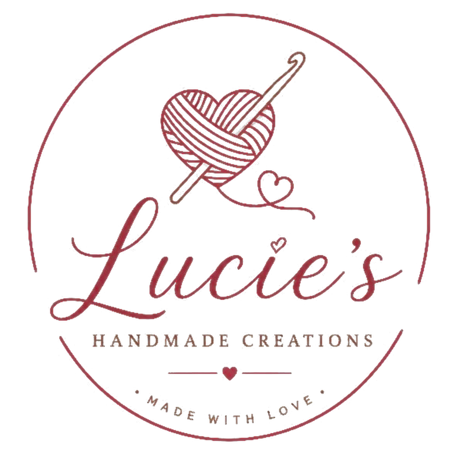

Knitted & crocheted, made by handHandmade with love, just for you.
Discover lovingly crafted knitted and crocheted pieces, made to add warmth, personality, and a little something special to your style.
Simply send your request on WhatsApp — Lucie will personally help you with the details.
Made by hand — one stitch at a time
The collection
Four pieces, made by hand
Prices are for the piece as shown. Add a colour of your choice for R30 more.
Ordering
How to order
There is no checkout on this website. You build your order here, then send it to Lucie on WhatsApp — she confirms everything with you.
About
Every stitch tells a story
A handmade piece is slower to make and kinder to wear than something made by the thousand — and it never arrives looking like everyone else's.
- Made one at a time. Knitted and crocheted by hand, not printed off a machine.
- Yours, in your colour. Ask for a different shade and it will be made that way.
- One person to talk to. You message Lucie directly and she confirms every detail.
The making
Every piece starts as a single stitch
Nothing here comes off a production line. Your piece is worked row by row, and it is finished only when Lucie is happy with it.
- Worked by hand, not by machine.
- Yarn chosen for your piece, which is why the shades can differ slightly.
- Made to order, so it takes a little time — Lucie will tell you how long.
Contact
Talk to Lucie
What happens next
- Your message opens in WhatsApp with your pieces, quantities and colours already written out. You can edit it before sending.
- Lucie replies to confirm what she has, the final price, and how payment works.
- She confirms collection or delivery with you. Nothing is charged on this website and no payment details are collected here.